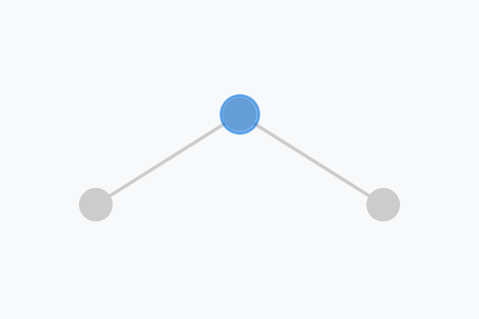
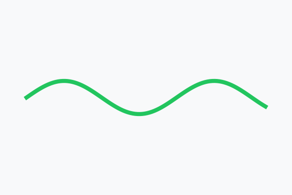

학습목표 1
OLED 유기물 증착 챔버가 어떤 센서로 모니터링되는지 이해하고, 시간축 기준 데이터 구조를 설명합니다.
OLED 유기물 증착 챔버의 온도·진공도·증착률 로그를 따라가며 이상 징후를 AI가 자동 감지하고 대시보드로 리포트하게 만듭니다.
하나의 증착 챔버를 기준으로 공정이 어떻게 모니터링되는지, 이상치가 발생하면 센서 로그에 어떻게 나타나는지, 그 신호를 AI가 자동 감지하고 엔지니어용 대시보드로 보고하게 하려면 무엇을 지시해야 하는지 순서대로 다룹니다.
설비 하나를 정하고, 정상 모니터링 화면을 본 다음, 이상 징후가 어떻게 시작되는지 추적하고, 마지막에 AI 감지 규칙과 리포트 화면으로 연결합니다.
OLED 유기물 증착 챔버가 어떤 센서로 모니터링되는지 이해하고, 시간축 기준 데이터 구조를 설명합니다.
챔버 압력 상승, 소스 온도 드리프트, 증착률 흔들림이 이상 징후로 나타나는 방식을 해석합니다.
AI 자동 감지 규칙과 대시보드 리포트 구성을 작업지시서로 작성합니다.
OLED 발광층을 만들 때 유기 재료를 진공 챔버 안에서 가열해 기화시키고, 기판 위에 얇게 증착합니다. 이때 소스 온도, 챔버 압력, QCM 증착률, 냉각수 유량이 흔들리면 막 두께와 휘도 균일도가 같이 흔들릴 수 있습니다.

OLED 발광층 유기물 증착 설비 (VTE)
유기 재료를 가열·기화하여 기판에 증착하는 메인 진공 챔버

증착이 완료된 OLED 기판 샘플
R, G, B 유기물 서브픽셀 패턴이 정밀하게 형성된 유리 기판

Display · OLED
Sensor stream Drift · Watch
Drift · Watch
 Rule + AI
Rule + AI
 Dashboard
Dashboard
 Engineer check
Engineer check
 Action report
Action report
VTE-03 설비는 1분마다 센서를 남기고, 운영자는 화면에서 현재값과 알람만 확인합니다. 문제는 작은 드리프트가 알람 전에는 정상 노이즈처럼 보인다는 점입니다.
운영 화면은 현재값을 잘 보여주지만, “최근 30분 동안 같이 흔들린 센서 조합”을 자동으로 설명해주지는 않습니다.
예를 들어 13:05부터 소스 온도가 천천히 올라가고, 13:18에 챔버 압력이 UCL 근처까지 접근하며, 13:22에는 QCM 증착률이 목표값에서 흔들리기 시작합니다. 이 흐름이 이어지면 막 두께 편차와 휘도 불균일로 연결될 수 있습니다.
순간 알람은 아니지만 5-point 이동평균이 20분 이상 한 방향으로 올라갑니다.
진공도가 흔들리며 압력이 관리상한 근처에 머뭅니다. 소스 온도 변화와 같은 시간대인지 봐야 합니다.
QCM 증착률이 UCL/LCL 밖으로 벗어나면 OOC로 보고, 해당 lot과 설비 상태를 즉시 연결합니다.
AI는 원인을 단정하는 도구가 아니라, 정해진 기준으로 로그를 정렬하고, Watch/OOC를 표시하고, 어떤 센서가 먼저 흔들렸는지 설명하는 도구로 설계해야 합니다.
대시보드는 예쁜 차트가 아니라 업무 화면입니다. 어떤 설비가 위험한지, 어느 lot에서 시작됐는지, 어떤 센서가 먼저 흔들렸는지, 담당자가 무엇을 확인해야 하는지가 한 번에 보여야 합니다.
증착률 이동평균이 LCL 아래로 벗어났습니다. 25분 전부터 소스 온도 상승과 챔버 압력 Watch가 함께 관찰됩니다.
챔버 압력이 UCL의 85% 이상에 3회 연속 접근했습니다. 진공 펌프와 배기 밸브 상태를 확인하세요.
유기 재료 교체 시점, QCM 센서 보정, 챔버 클리닝 이력, 냉각수 유량을 우선 확인합니다.
소스 온도 이동평균이 언제부터 한 방향으로 올라갔는지 확인합니다.
패턴: 온도 드리프트온도 상승 뒤 챔버 압력이 같은 시간대에 UCL 근처로 접근했는지 비교합니다.
패턴: 압력 WatchQCM 증착률이 흔들린 시점과 압력 변화가 연결되는지 확인합니다.
패턴: Rate OOC유기 재료 교체, 챔버 클리닝, QCM 보정, 진공 펌프 PM 이력을 같은 시간대에 놓고 후보를 좁힙니다.
패턴: 이벤트 매칭AI 결과는 원인 단정이 아니라, 담당자가 먼저 확인할 챔버·lot·센서·시간대를 정리하는 용도로 씁니다.
패턴: 우선순위AI가 VTE-03을 OOC로 표시했더라도, 현장 엔지니어는 반드시 설비 이력과 품질 결과를 연결해 확인해야 합니다.
OLED 유기물 증착 설비 VTE-03의 센서 로그를 분석해줘. 데이터에는 timestamp, equipment_id, lot_id, source_temperature, chamber_pressure, qcm_rate, cooling_water_flow 컬럼이 있다. 먼저 lot_id와 timestamp 기준으로 시간축을 정렬하고, 결측치와 단위 이상을 점검해줘. 각 센서에는 5-point 이동평균을 적용해줘. 최근 정상 lot 20개를 기준으로 Center, UCL, LCL을 계산해줘. UCL/LCL을 벗어난 시점은 OOC로 표시하고, UCL의 85% 이상에 3회 연속 접근하면 Watch로 표시해줘. 소스 온도 상승 → 챔버 압력 상승 → QCM 증착률 흔들림 순서가 보이면 전조 패턴으로 요약해줘. 결과는 다음 화면으로 만들어줘. 1. VTE 설비별 Normal / Watch / OOC 상태 타일 2. 소스 온도, 챔버 압력, QCM 증착률 관리도 3. lot_id별 OOC 발생 시점 목록 4. OOC 30분 전부터의 전조 패턴 요약 5. 유기 재료 교체, 챔버 클리닝, QCM 보정, 진공 펌프 PM 확인 메모 6. 일일 리포트 형태의 요약 문장
06강의 핵심은 추상적인 이상 탐지가 아니라, 하나의 공정과 설비를 잡고 정상 모니터링, 이상 징후, AI 자동 감지, 대시보드 리포트까지 연결하는 것입니다. VTE-03의 소스 온도, 챔버 압력, QCM 증착률을 같은 시간축에 놓고 기준을 명확히 주면 AI는 엔지니어가 조치할 수 있는 화면과 리포트를 만들어줍니다.